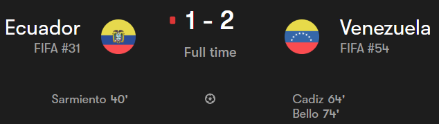
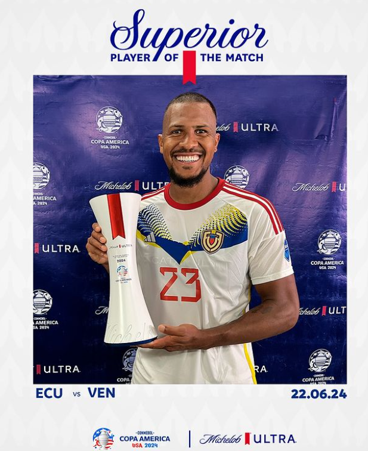
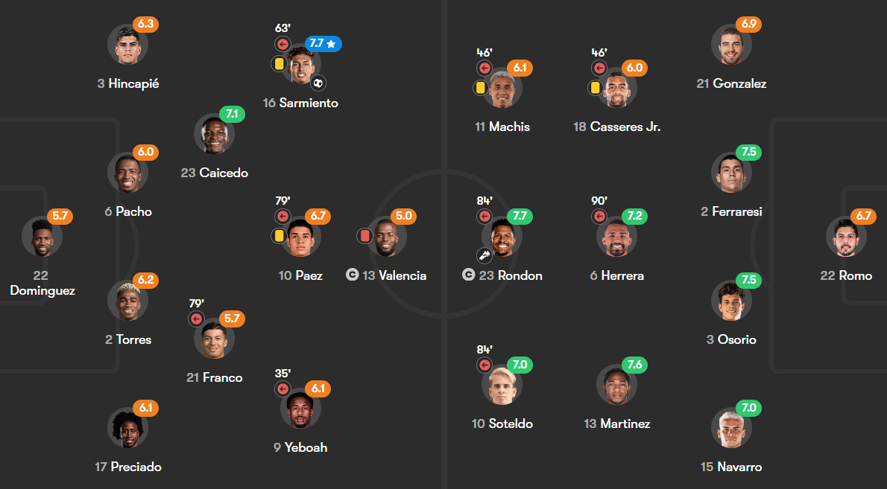
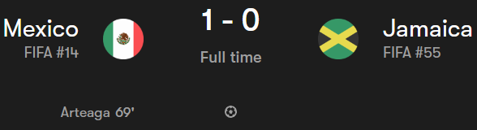
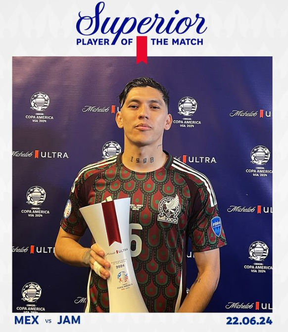
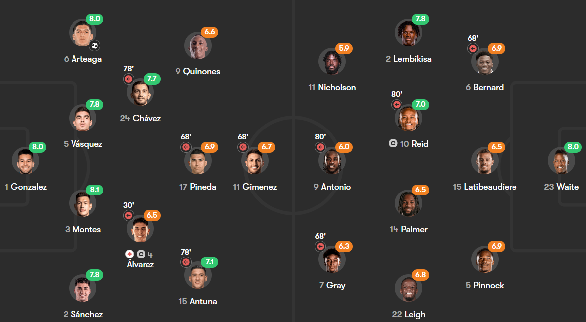

Day 3
Table of Contents
Day 3
Ecuador v Venezuela

Rash Valencia. Venezuela make the comeback. We finally have goals. We had a good old fashioned red card plus a comeback. Let’s get into the reaction.
Match Reaction
- Have to resort to this because the highlights from Copa America is just the video feed with no score. Hate that it’s only local coverage 😢
We begin with a chance from Ecuador down the left and the cross was played early towards the player but the keeper was equal to it and there was a nasty high boot from Enner Valencia which took out the Venezuela player in an attempt to win the ball and he was yellow carded at first but on VAR review it was turned into a straight red because it was right on his chest. Ecuador took the lead actually from a free kick when the ball was played in and the defense could only clear it as far as Sarmiento who made no mistake with his finish toe poking it past the keeper. Of course, the numerical advantage Venezuela had would pay off and it did. The ball was played into the box towards Cadiz and he finished it brilliantly on the near post to equalize. It took a slight deflection off the Ecuador defender but you take those. The eventual winner came from Bello when the ball was played towards the right and the cross found a Venezuelan player and it was parried only as far as Bello who sent it to the roof of the net with aplomb to get the full points.
Player of the Match - S. Rondon

I actually forgot he was Venezuelan 😅. I thought he’d be Ecuador or something. He had a good performance. Looked dangerous throughout and set up the equalizer which was the turn of fortune for Venezuela.
Lineups
- Pulled from Fotmob 
Mexico v Jamaica

Both keepers have great games. Mexico need a banger to resolve the deadlock. Jamaica were a decent threat. We got a dominant game from Mexico but ultimately it was a well taken goal by Arteaga to resolve the deadlock. Alvarez unfortunately had a major injury(And with that United’s interest ended as quickly as it started 😅)
Match Reaction
We begin with a ball played to the right and the cross was cleared out till a Mexico player but the Jamaica keeper got down low to save it and it was cleared. Next was a shot from the edge of the box after Chavez found him when he was in the box but his shot whisked wide of the right post. The next one was a tame header from a Mexico corner which was collected easily by the Jamaica keeper who was constantly on hand to deal with any Mexico threat. Mexico did have to be alert when a looping ball into the box from the left was dealt with by the defense but it only went till a Jamaica player who didn’t strike it cleanly but the keeper could only spill it and the defense got it cleared. Jamaica thought they got the lead when a great cross came in from the right and it was bundled in by Antonio but VAR ruled him to be offside. The eventual goal came in spectacular fashion when the ball was drifted in from the right and it was defended but it fell to Romo who set up Arteaga who smashed a terrific volley to give the lead. There was a perhaps half hearted long shot from Jamaica and it seemed savable but he parried it for a corner. And that volley wound up being the match winner.
Player of the Match - G. Arteaga

Put in a good shift and had the best technique scoring a terrific volley like that. Well taken and gave his country all the points today.
Lineups
- Pulled from Fotmob
